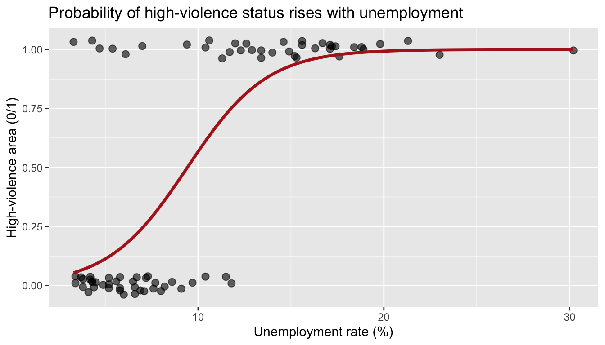

Lab 12 · Logistic Regression: Chicago Neighborhoods, Then Alaska Nights
CRJU 705 · Session 12
Goal: run the complete logistic-regression workflow from today’s lecture — glm(family = binomial), coefficients → odds ratios, odds ratios → predicted probabilities, and the Bayesian version with brms — first on the Chicago community areas, then on your own model of intoxicated crashes in the Alaska data.
This is the last lab with new statistical content: everything after today is your project. Treat this hour as a dress rehearsal — the workflow you practice here is exactly the workflow Checkpoint 4 asks for if your project outcome is binary.
How labs work: run the Setup chunk as-is, follow the Walkthrough along with me, then complete the Your Turn tasks in your own script. The Exit Ticket gets submitted to Canvas before you leave.
Setup
Open RStudio, start a new R script, and run:
brms is the same package you installed for Lab 8 — nothing new to install. Same reminder as then: the first brm() of a session pauses at Compiling Stan program... for a minute before sampling. It is not frozen.
Two old friends: the 77 Chicago community areas (Homework 2, and the lecture thread ever since), and the 20,000 Alaska crashes (Labs 5 and 7, Homework 5 and 8’s ANOVA cousin). Today the crash data plays the role of your project dataset: a binary outcome you care about, predictors you have to build yourself.
Walkthrough
Look at the outcome first
Our binary outcome is high_violence: is the area’s violent-crime rate above the citywide median? It ships in the file, but never trust a variable you haven’t checked:
areas |> count(high_violence)# A tibble: 2 × 2
high_violence n
<lgl> <int>
1 FALSE 39
2 TRUE 38# A tibble: 2 × 2
high_violence median_violent
<lgl> <dbl>
1 FALSE 14.1
2 TRUE 43.038 areas above the median, 39 at or below (77 is odd, so the split isn’t exactly even). The group medians are wildly different — the flag means what the codebook says it means.
R treats TRUE as 1 and FALSE as 0, so a logical column drops straight into glm() — no conversion needed.
One predictor, seen
Before any multi-predictor model, look at the shape of the relationship. This is the lecture’s curved hill, on real data:
ggplot(areas, aes(unemployment_rate, as.numeric(high_violence))) +
geom_jitter(height = 0.04, width = 0, size = 2.5, alpha = 0.6) +
geom_smooth(method = "glm", method.args = list(family = "binomial"),
se = FALSE, color = "firebrick", linewidth = 1.2) +
labs(title = "Probability of high-violence status rises with unemployment",
x = "Unemployment rate (%)", y = "High-violence area (0/1)")
Low-unemployment areas pile up at 0, high-unemployment areas at 1, and the fitted curve climbs steeply through the middle — most of the action is between roughly 5% and 15% unemployment.
Fit the model
lm() becomes glm() with family = binomial. That one argument is the entire syntax difference:
Call:
glm(formula = high_violence ~ unemployment_rate + pct_vacant,
family = binomial, data = areas)
Coefficients:
Estimate Std. Error z value Pr(>|z|)
(Intercept) -5.8208 1.3747 -4.234 2.29e-05 ***
unemployment_rate 0.3699 0.1100 3.363 0.000771 ***
pct_vacant 0.2849 0.1428 1.995 0.046007 *
---
Signif. codes: 0 '***' 0.001 '**' 0.01 '*' 0.05 '.' 0.1 ' ' 1
(Dispersion parameter for binomial family taken to be 1)
Null deviance: 106.73 on 76 degrees of freedom
Residual deviance: 52.06 on 74 degrees of freedom
AIC: 58.06
Number of Fisher Scoring iterations: 6Both coefficients are positive with small p-values — but they’re in log-odds, and nobody thinks in log-odds.
Exponentiate: log-odds → odds ratios
OR 2.5 % 97.5 %
(Intercept) 0.002965276 0.0001115289 0.02846386
unemployment_rate 1.447590364 1.1934960639 1.84714872
pct_vacant 1.329619347 1.0371047252 1.83804694Reading it out loud (the skill that matters):
- Unemployment, OR ≈ 1.45: each additional percentage point of unemployment multiplies the odds of high-violence status by about 1.45 — 45% higher odds — holding vacancy constant.
- Vacancy, OR ≈ 1.33: each additional point of vacant housing raises the odds by about 33%, holding unemployment constant.
- For odds ratios, the no-effect value is 1 (not 0). Both 95% CIs sit entirely above 1.
The classic mistake: “OR = 1.45 means the probability goes up 45%.” No — the odds go up 45%. Odds = p/(1−p). The two only look alike when p is small. Say “odds” when you mean odds, and use predict() when you want probabilities.
Predicted probabilities: from effects to cases
Odds ratios describe effects; decision-makers ask about places. predict(type = "response") answers on the probability scale:
# A tibble: 2 × 4
community unemployment_rate pct_vacant p_high_violence
<chr> <dbl> <dbl> <dbl>
1 Forest Glen 4.2 2.6 0.0286
2 West Garfield Park 18.9 20 0.999 About a 3% predicted probability for Forest Glen; over 99% for West Garfield Park. And the “by hand” version, so the machinery isn’t a mystery — plug the log-odds prediction into plogis() (the inverse of the logit):
The Bayesian version
Same formula, bernoulli() family, the Session 8 settings:
Estimate Q2.5 Q97.5
Intercept 0.001792006 7.756542e-05 0.02117534
unemployment_rate 1.492292997 1.219122e+00 1.92093080
pct_vacant 1.366238869 1.035275e+00 1.87703700The posterior odds ratios land near the glm() estimates, and both 95% credible intervals exclude 1. The interpretation you’re allowed to say out loud: “Given the data and priors, there’s a 95% probability the unemployment odds ratio lies in this interval.”
Your Turn
Work in your own script. Comment each answer. The question: what predicts whether an Alaska crash involves an intoxicated driver (intox_any)?
1. Build your predictors. No dataset ships with your analysis variables — Lab 7’s lubridate moves, one more time:
crashes <- crashes |>
mutate(
date = mdy(date), # Lab 5/7 habit
hour = hour(time),
weekend = wday(date, week_start = 1) >= 6, # Mon = 1 … Sat = 6, Sun = 7
night = hour >= 22 | hour < 4 # 10 p.m. – 3:59 a.m.
)
# Sanity checks before modeling — always:
# a) count(crashes, night) and count(crashes, weekend) — plausible shares?
# b) mean(crashes$intox_any) — what's the baseline rate you're modeling?2. Fit and translate. Model intox_any from driver_age, night, and weekend; then exponentiate:
# intox_model <- glm(intox_any ~ driver_age + night + weekend,
# data = crashes, family = binomial)
# summary(intox_model)
# exp(cbind(OR = coef(intox_model), confint(intox_model)))In comments: (a) interpret the night odds ratio in one plain sentence — Lab 7 found intoxication involvement “nearly doubles” at night; does the model agree? (b) interpret weekend the same way; (c) what do you conclude about driver_age? Its interval covers 1 — practice saying that no evidence is the finding.
3. Predicted probabilities for two drivers. Contrast a 21-year-old driving on a weekend night with a 45-year-old on a weekday afternoon:
# profiles <- tibble(
# driver_age = c(21, 45),
# night = c(TRUE, FALSE),
# weekend = c(TRUE, FALSE)
# )
# profiles |> mutate(p_intox = predict(intox_model, newdata = profiles,
# type = "response"))In a comment: report both probabilities and compare them to the baseline rate from Task 1b. Notice the night OR is ~2 but neither probability is anywhere near “double 50%” — odds ratios multiply odds, and when p is small, doubled odds is roughly doubled probability, but it does not stay that way as p grows.
4. Odds-ratio translation drills. No fitting — just fluency. For each coefficient below (from hypothetical logistic models), write one sentence: the odds ratio, the direction, and the percent change in odds.
# a) beta = 0.30 (body-camera footage available -> case cleared)
# b) beta = -1.00 (defense counsel at first appearance -> pretrial detention)
# c) beta = 0.00 (defendant age -> failure to appear)
# d) A classmate reads (b) as "the probability of detention drops 63%."
# In a comment: what did they get wrong, and how would you fix the sentence?5. (Stretch) One more predictor. Add severity to your crash model. Do the night and weekend odds ratios move much? In a comment: why does “holding the other predictors constant” matter when you tell the story?
Exit Ticket
Submit a short R script to Canvas before you leave, containing:
- A comment: why
lm()is the wrong tool for a 0/1 outcome, in one or two sentences - Your fitted crash model plus two interpretation sentences: one odds-ratio sentence (the
nighteffect) and one predicted-probability sentence (your two driver profiles) - A comment stating the difference between odds and probability — and which one an odds ratio multiplies
- A comment: which piece of today’s workflow you’d use in your final project, and the one thing you most need help with at next week’s help session